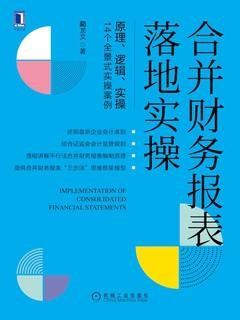

 |
合并财务报表落地实操
藺龙文
|
前言
第一章 合并财务报表理论基础
第一节 合并理论
第二节 合并财务报表合并范围
第三节 合并财务报表编制一体性原则
第四节 合并财务报表编制前的准备工作
第二章 企业合并
第一节 企业合并的概念及类型
第二节 非同一控制下的企业合并会计处理原则
第三节 同一控制下的企业合并会计处理原则
第四节 企业合并与合并财务报表之间的内在关联
第三章 权益投资个别财务报表核算
第一节 投资方对被投资方的影响力判断及权益投资会计分类
第二节 对被投资方达不到重大影响的权益投资核算
第三节 对联营、合营企业权益投资的核算
第四节 对子公司权益投资的核算
第五节 权益投资资产转换
第四章 平行法编制合并财务报表
第一节 平行法概述
第二节 母公司投资成立子公司的平行法合并财务报表实操案例
第三节 母公司购买子公司的平行法合并财务报表实操案例
第五章 非同一控制下的企业合并购买日合并资产负债表编制
第一节 购买日合并资产负债表编制原理概述
第二节 平行法编制非同一控制下购买日合并资产负债表
第三节 抵销法编制非同一控制下购买日合并资产负债表
第六章 权益投资抵销分期法与分段法
第一节 合并财务报表编制程序探索
第二节 权益投资抵销分期法与分段法
第三节 权益投资抵销实操案例
第七章 内部交易及债权债务抵销
第一节 内部交易抵销分录编制原理
第二节 集团内部交易实操案例
第三节 总、分公司并表实操案例
第四节 母、子公司内部未实现逆流交易的特殊问题
第八章 长期股权投资成本法基础上编制合并财务报表
❖ 实操案例8-1 成本法基础上编制合并财务报表
第九章 合并现金流量表
第一节 合并现金流量表编制
第二节 合并现金流量表的调整、抵销分录编制
第十章 复杂股权结构下合并财务报表编制案例
第一节 多级子公司情形
第二节 合计持有子公司的合并财务报表编制
第三节 集团内交叉持股问题
第十一章 合并财务报表所得税会计原理
第一节 所得税会计基本原理
第二节 合并财务报表所得税会计原理
第十二章 同一控制下的企业合并合并财务报表编制
第一节 权益结合法理论概述
第二节 同一控制下的企业合并合并前期合并财务报表编制
第三节 同一控制下的企业合并合并财务报表编制实操案例
第十三章 非同一控制下增资取得控制权的合并财务报表处理
第一节 从金融资产增资取得控制权
第二节 从对联营、合营企业的权益投资增资取得控制权
第十四章 失去控制权的合并财务报表处理
第一节 平行法处置子公司全部股权失去控制权的合并财务报表处理
第二节 抵销法处置子公司全部股权失去控制权的合并财务报表处理
第三节 处置子公司部分股权后能实施重大影响或共同控制的情形
第四节 处置子公司部分股权后对被投资方达不到重大影响的情形
第五节 子公司增资扩股导致投资方失去控制权的情形
第十五章 母公司持有子公司的股权比例发生变化但控制权没有变化的情形
第一节 母公司取得控制权后进一步收购子公司少数股权
第二节 母公司取得控制权后处置子公司部分股权但不影响控制权的情形
第三节 取得控制权后股权被稀释但不影响控制权的情形
第十六章 编制合并财务报表“三步法”思维框架
后记

非常面面俱到的专业书籍，可作为案头查阅使用。